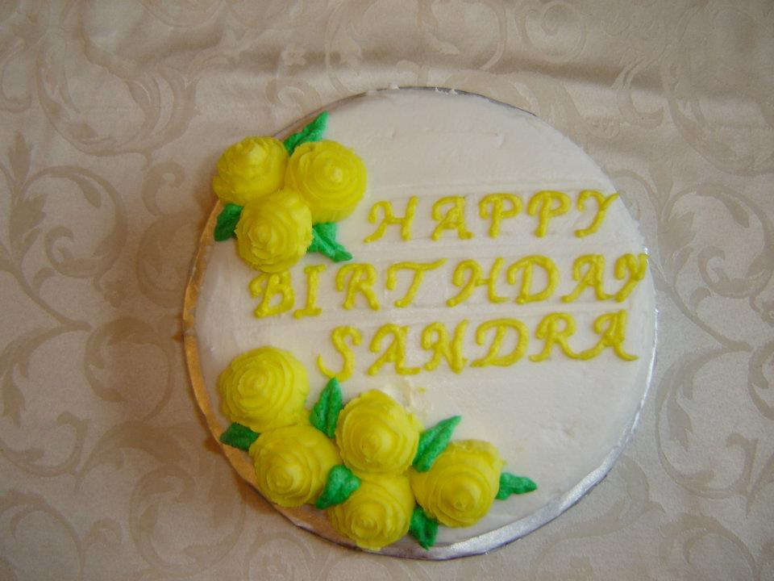
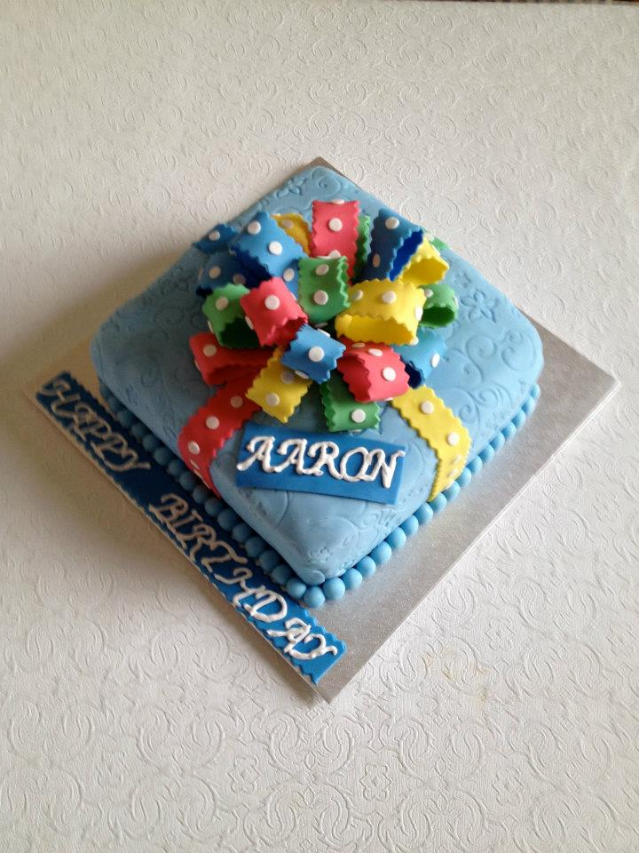
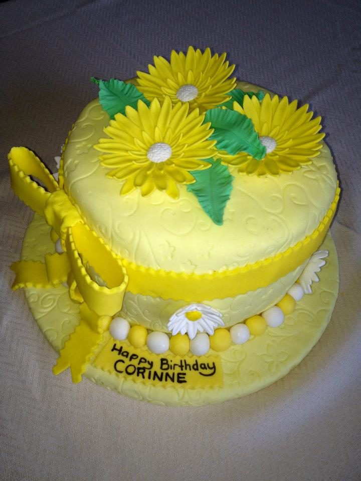
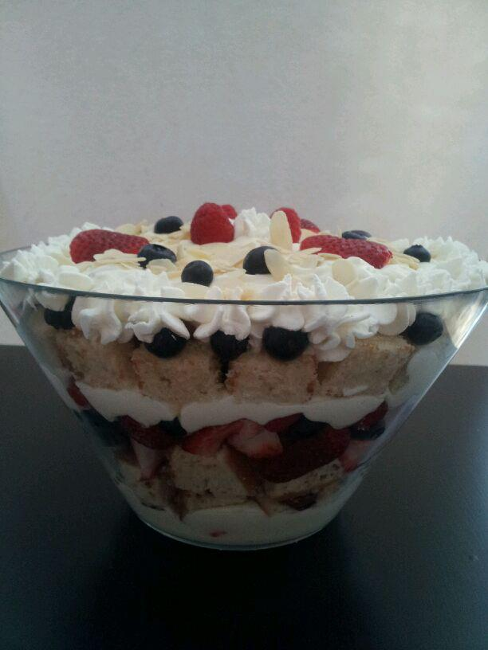
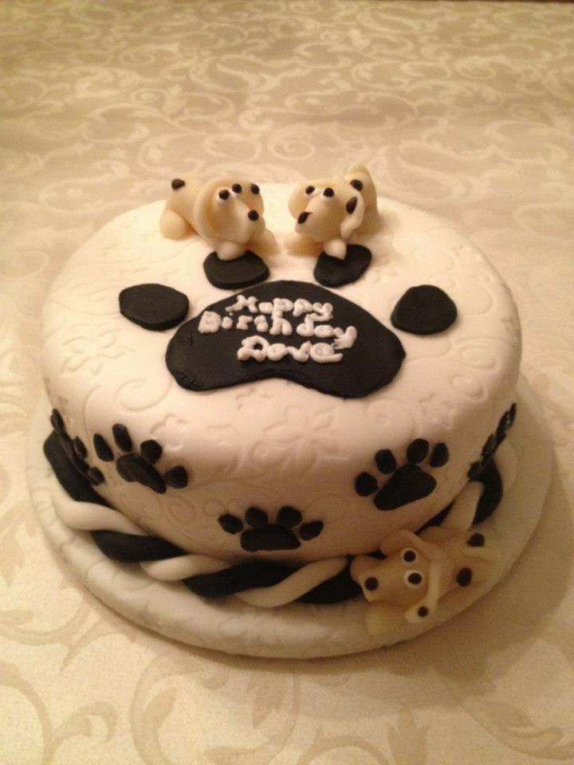

Quelques photographes
--ici, vous pourriez plonger dans ces délices sucrées!





Qu’est ce que vous préférez?
Chocolat? Vanille? Fruité?
Selon vos désirs, Trish peut vous préparer un gâteau par une pléthore de recettes secrètes qu'elle a perfectionnées au fil des ans.
Notre garantie
Tous les gâteaux sont faits à la main et sont cuisinés avec des ingrédients de qualité. Aucun agents de conservation sont utilisés dans leur fabrication.